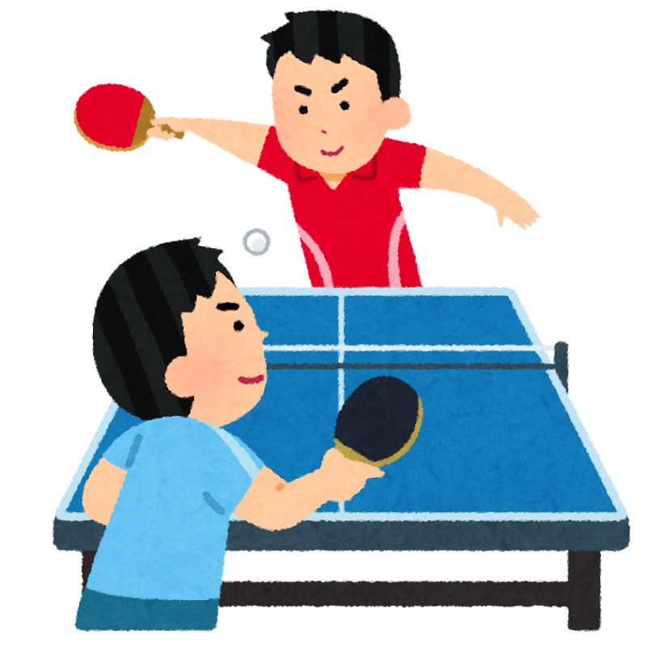
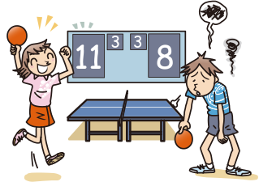

卓球のルールについて
卓球のルール シングルス
サーブ

サーブを打つ人は15cm以上球を上げてから自分のコートに1バウンドさせ相手コートにも１バウンドさせる２点ごとにサーブを打つ人を交代する. 右画像引用元:【卓球】五輪代表の水谷隼 「まあ、まずまず」本番直前の大会は5勝1敗、課題を確認：中日スポーツ・東京中日スポーツ https://www.chunichi.co.jp/article/276117
レシーブ

レシーブをする人は自分のコートに１バウンドした後，自分のコートにバウンドせず，相手のコートに返球する. 相互にレシーブをし，打ち返したときにコートの外に出るか，自分のコートにバウンドしたら相手に点が入る.
ゲームの勝利条件

11点先にとることで１ゲームを得ることとなる4ゲーム先取することで勝利となる．右画像引用元:https://jtta.or.jp/rule
卓球のルール動画
卓球の動画